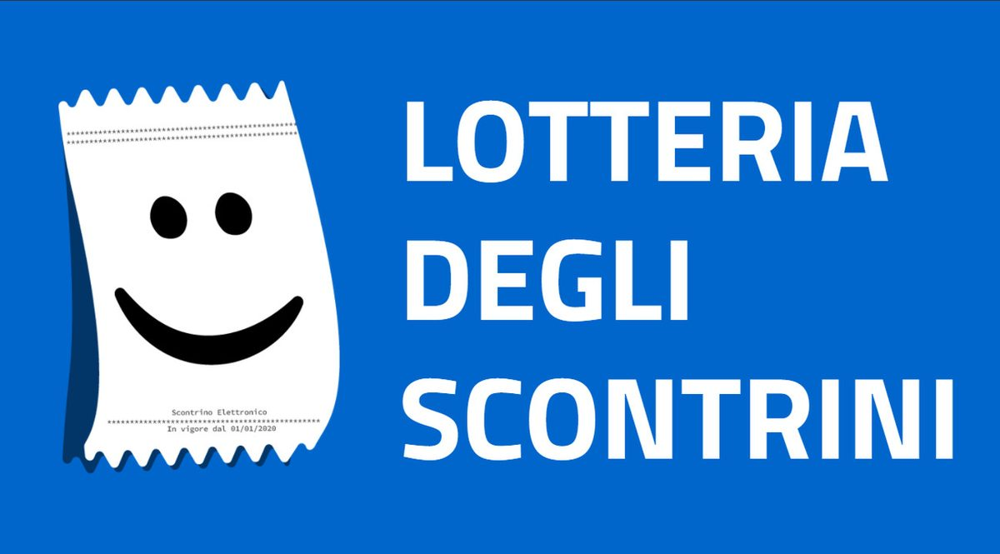
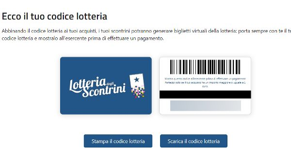

#APPROFONDIMENTI👥
⬆️📌 LOTTERIA DEGLI SCONTRINI - Lotteria degli scontrini al via dal 1° febbraio 2021 pagando con strumenti tracciabili: chi partecipa, come funziona, premi, estrazioni
✅ Pronta al via la lotteria degli scontrini, uno strumento studiato e creato principalmente per promuovere e diffondere l’uso della moneta elettronica.
✅ Il meccanismo di funzionamento, prevede che su ogni acquisto, vengano emessi dei “biglietti” virtuali che partecipano ad estrazioni di premi. Le estrazioni valgono solo per gli acquisti di prodotti e servizi da parte di consumatori finali.
✅ Per partecipare alla lotteria, bisogna essere contribuenti: maggiorenni, residenti in Italia, e bisogna dotarsi di un codice lotteria sul portale predisposto dall’Agenzia delle dogane e monopoli.

✅ Il codice dovrà essere comunicato all’esercente al momento degli acquisti.
✅ Il gioco è correlato ai normali acquisti effettuati senza contanti, con strumenti di pagamento elettronici.
✅ Al momento dell’acquisto di importo pari o superiore a 1 euro, il suddetto codice potrà essere abbinato allo scontrino emesso.
✅ Allo scontrino, saranno abbinati dei biglietti virtuali, un biglietto virtuale per ogni euro speso fino a un massimo di 1.000 biglietti virtuali per ogni scontrino di importo pari o superiore a 1.000 euro
✅ Non è possibile partecipare alla lotteria in caso di:
- acquisti di importo inferiore a un euro;
- acquisti effettuati online;
- acquisti effettuati nell’esercizio di attività di impresa, arte o professione.
- gli acquisti per i quali i dati dei corrispettivi sono trasmessi al sistema Tessera Sanitaria (per esempio acquisti effettuati presso farmacie, parafarmacie, ottici, laboratori di analisi, ambulatori veterinari ecc.);
- gli acquisti per i quali l’acquirente richieda all’esercente l’acquisizione del proprio codice fiscale a fini della detrazione o deduzione fiscale.
✅ Sul sito (www.lotteriadegliscontrini.gov.it) è presente anche un’area riservata accessibile tramite Spid, che consente ad esempio di:
- consultare il proprio profilo, contenente le informazioni inserite nella fase di registrazione;
- controllare il numero di biglietti virtuali della lotteria associati al singolo scontrino commerciale ricevuto;
- verificare le vincite;
- tenere sotto controllo i termini per reclamare i premi;
- consultare i codici lotteria associati al proprio codice fiscale, con la relativa data di generazione.
✅ Le estrazioni: Il programma della lotteria prevede delle estrazioni settimanali, mensili e annuali (calendario estrazioni).
- estrazioni settimanali con 15 premi da 25.000 euro per gli acquirenti, e 15 premi da 5.000 euro per gli esercenti;
- estrazioni mensili con 10 premi da 100.000 euro per gli acquirenti, e 10 premi da 20.000 euro per gli esercenti.
- estrazione annuale con un premio di 5.000.000 di euro per l’acquirente e un premio di 1.000.000 di euro per l’esercente.
✅ I vincitori saranno avvisati tramite PEC o Raccomandata AR, e avranno l’obbligo di recarsi entro 90 giorni dalla ricezione della comunicazione, presso l’ufficio dei monopoli territorialmente competente per l’identificazione e l’indicazione delle modalità di pagamento.
✅ In generale le comunicazioni possono avvenire:
- per gli acquirenti, tramite l’indirizzo di posta elettronica certificata se lo hanno fornito nella sezione “area riservata” del portale lotteria;
- per gli acquirenti che non hanno fornito indirizzo di posta elettronica certificata nella sezione “area riservata”, si potranno utilizzare i dati disponibili nell’Anagrafe nazionale della popolazione residente (ANPR).
- Gli esercenti sono invece individuati sulla base del numero di partita Iva memorizzato nella banca dati “Sistema Lotteria”, e la comunicazione della vincita avviene tramite l’indirizzo di posta elettronica certificata.
📌 In conclusione, un nuovo strumento innovativo messo a disposizione dei cittadini per trarne dei benefici fiscali e non.
Se lo desideri, iscriviti ai mie canali social per restare aggiornato ⬇️
Social MediaInoltre se hai trovato utile ed interessante questo articolo, non esitare a condividerlo, a lasciare un tuo mi piace 👍, o seguire la mia pagina Facebook, per sostenermi e continuare ad informare. Grazie anticipatamente a chi vorrà farlo.